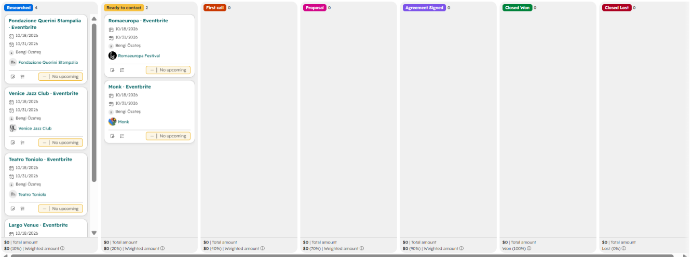
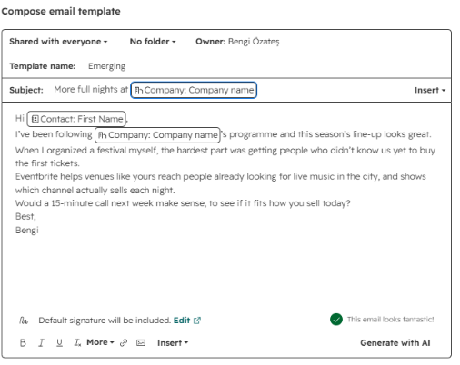

A first-pass B2B lead plan for Eventbrite in Venice, the Veneto and Rome. Bending Spoons completed its acquisition of Eventbrite in March 2026, and live events are the world I know best. Built from public information and what I learned organizing Pangea and promoting events at Last Penny.
From my own events, the pain depends on how well known the organizer already is.
Nobody knows the event yet. The hard part is getting the word out and selling the first tickets.
Main pain · reachAwareness is solved. Tickets sell out in minutes, and the refunds that follow take over the team’s week.
Main pain · demand controlRunning the logistics on the day and keeping attendees happy.
Shared painEvery feature named here comes from Eventbrite’s own pages.
Eventbrite Ads and Smart Audience targeting, email to up to 10,000 people in their own community, and tracking links that show which channel sells.
A waitlist that hands every refunded ticket to the next person automatically, a refund cutoff they set themselves, and timeslots and holds for high-demand dates.
The Check-In App at the door and real-time sales reports.
The weights are my own first guess and easy to change.
I checked nine leads on their own websites before trusting the score, starting with the top-ranked venues.
Concerts are sold on TicketOne.
Run by the City of Venice, tickets go through the municipality’s own box office pages.
Sells tickets in its own online shop.
Mixes its own booking page with Vivaticket, Xceed and Boxerticket, and some nights are free.
Runs its own booking site for visits and events.
Sells from its own website. Two days at La Nuvola and 20,000 attendees at the last edition, larger than I first assumed.
Sells on its own Vivaticket storefront. A mega account, not a first target.
Two months of shows across several venues, sold on Vivaticket plus its own box office, phone and WhatsApp.
Sells on Clappit, with a member presale, free events that still need a booking, WhatsApp checkout at the door and standing places resold for sold-out talks. A textbook established organizer.
Every one of them already sells tickets somewhere. So the first conversation starts from what they lose with the setup they have today, and that changed the objection I prepare for each one.
Click a row for the opening angle and the objection to prepare for. Change any field and the list re-scores.
I imported the 24 leads into HubSpot with custom fields for segment, score and platform, opened deals for the verified ones and wrote one email template per segment. Nothing was sent.


The emerging template opens with reach and my own festival experience. The established one opens with sell-outs and refunds. Company and contact names fill in automatically.
Also completed the HubSpot Sales Software certification while building this.
Call two or three organizers I know and test whether the two segments hold.
Before outreachFill every “Not checked” field and adjust the weights where reality disagrees.
DataThe top ten get a short message built around their own pain, never a generic pitch.
OutreachSources: Eventbrite, Wikipedia · Il Sole 24 Ore · How to use Eventbrite · Waitlist · Refund policy. Lead details are my estimates from public pages. An independent exercise, not affiliated with Eventbrite or Bending Spoons.